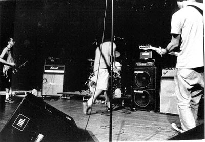

Do czasu liceum nie słuchałem żadnego konkretnego rodzaju muzyki. Mój brat słuchał jazzu ale to nie ruszało mnie ani trochę. Łykałem trochę poezji śpiewanej typu Anna Maria Jopek czy Grzegorz Turnau i... to by było na tyle. Dopiero kiedy rodzice zainstalowali jakiś rozszerzony pakiet kablówki gdzieś w okolicach mojej drugiej klasy gimnazjum, znalazłem MTV i tam jakimś cudem natknąłem się na kawałek "Bleed american" Jimmy Eat World. Zacząłem szukać, pytać kumpli czy nie znają, czy nie mają może ściągniętych jakichś ich piosenek (bo ja nie miałem internetu). Było to dla mnie coś nowego. Po czasie widzę wartość tej piosenki w inny sposób, ale wtedy to było coś! No i znalazł się kumpel, który miał "Bleed american" Jimmy'ego na CD. Łyknąłem od razu. Potem usłyszałem termin "emo" i zacząłem co lekcje informatyki czytać wikipedię i allmusic by coś więcej się o tym gatunku dowiedzieć. I tak to się zaczęło.
Jeśli miałbym wskazać najważniejszą płytę jaką przesłuchałem będąc na początku fascynacji muzyką, to będzie to nagrana przez mojego kumpla Miśka, składanka "Emo 1". Znalazło się tam kilkanaście kawałków z bólem ściągniętych jeszcze Kazaą. Nie mam jej już. Z tego co pamiętam to były tam ze trzy kawałki The Appleseed Cast, jakiś Jimmy Eat World, może Jazz Tune, The Promise Ring i Pedro The Lion (po jednym może dwóch kawałkach), Knapsack (tu chyba aż cztery piosenki) i właśnie Mineral (z tego co sobie przypominam, to były to piosenki "Parkig Lot" i "Gloria").
Z tych wszystkich piosenek najbardziej pasowały mi The Appleseed Cast, The Promise Ring i Knapsack, bo było tam wtedy najwięcej dla mnie melodii. Ale po przeczytaniu masy informacji o "emo" i zespołach tego gatunku (wtedy wydawało mi się, że to była masa informacji, a jakoś dziwnym trafem przez lata nie posłuchałem Rites of Spring czy Husker Du), wiedziałem, że żeby słuchać emo "na poważnie", po prostu muszę lubić Mineral. Po prostu muszę i tyle.

Do tego dochodził też fakt, że nie znałem nikogo kto znał ten zespół, a to już w ogóle podrasowało moje ego do granic możliwości.
Więc jakimś cudem dotarłem do nich. Miałem zgrane "The power of Failing" i "&serenading" na verbatimach i nawet miałem porobione okładki - pełny profesjonalizm. I jak okładka pierwszej płyty Mineral, z tą kiczowatą czcionką (Comic Sans damn you!) nigdy do mnie nie przemawiała, tak "&serenading" zawsze budziła u mnie miłe uczucia.
"The power of failing" na moje młode ucho, osłuchane z aksamitnym głosem Anny Marii Jopek, nie było płyta prostą. Melodie może i były ale ukryte gdzieś za rzępoleniem gitar i fałszowaniem Simpsona. Nie byłem w stanie wytrzymać "Slower", "Dolorosa", "July" czy "Silver". Uznawałem to za wypadek przy pracy ("przecież to ich pierwsza płyta, są młodzi!"), niesłuchalne piosenki. Łagodniejsze brzmienie "Five, Eight and Ten" czy "80-37" i "Parking lot" budziły moją większą sympatię ale to dalej nie było to. Ta płyta nie trafiła u mnie na podatny grunt, nie byłem jeszcze na tyle otwarty, żeby jej słuchać. Do dziś mam z nią problem, bo wiem, że nie darzę jej takim uczuciem, jakim naprawdę powinienem. Ale stoję już tu, gdzie stoją Ci, co ją cenią. Którzy wiedzą, że ma ona duże znaczenie dla gatunku.
Jednak prawdziwy przełom, taki mój osobisty, przyszedł z "&serenading". Powolne "Love letter typewriter" już ścieliło sobie w moim uchu przytulne gniazdko. "Palisade" uderzało trochę mocniej, gitarami, które wydawały się świeżo wyniesione ze śmietnika, ze wspaniałą rozmarzoną końcówką. "GJS" brzmiał dla mnie zawsze jarmarcznie, ale kiedy słyszałem końcowe "I only hope that/ You can be proud of me", wybaczałem lekką rubaszność. "Unfinished" zawsze był tajemniczy. Piękna melodia, rozwijająca się przez dwie pierwsze minuty i późniejsze zawodzenie Chrisa połączone z noise'owymi gitarami - to było coś nowego w moim guście. Nie do końca mi się to podobało, ale czułem, że jest to ciekawe i interesujące. "For Ivadell" jest jedną z tych piosenek, które się uwielbia. Delikatna, z dobrym i skocznym tempem, z pięknym finałem ("But you are safe now and effortlessly breathing" i ten wspaniały riff aż do końca). Przy "Walking to winter" zawsze było mi zimno. Te zawodzące dźwięki gitary zawsze budziły we mnie takie uczucia. I to przełamanie od wersu "So that when I'm driving home at night" to było coś co zawsze stawiało mnie w mroźny wieczór na ulice jakiegoś amerykańskiego, małego miasteczka. Zawsze stawiało mnie tam samego. Ale to chyba o to chodzi w muzyce Mineral. "A letter" jest na nieszczęśliwej pozycji na tym albumie. Ten w sumie mocniejszy jak na nich kawałek jest tym, po którym zaczynają się totalne "sztosy" i przez to gubi się trochę jego wybuchowość, lekka punk'owość i pazur. Koncertowo pewnie byłoby fajnie usłyszeć tę ścianę gitar, ale słuchając płyty można na niego nie zwrócić uwagi. Bo...
...zaczynają się właśnie najważniejsze, jak dla mnie, kawałki Mineral. "SoundsLikeSunday", tytułowy i "The last world is rejoice". Ten swoisty tryptyk jest niesamowity, to jest to dlaczego się słucha takiego rodzaju muzyki. To są te kawałki, dla których chłopaki z Mineral wzięli do ręki instrumenty. Oparte na powtórzeniach, na delikatnych zwrotkach, powtarzanych w zapętleniu. Dla mnie trwają one znacznie dłużej niż te 5 minut każdy. Delikatne melodie z elektryzującymi finałami, wielogłosami i emocjami, na których mi tak bardzo w muzyce zależy. Oni tam nie ściemniają. Nie ma na to miejsca.
I tu tkwi sedno muzyki Mineral. W ich muzyce nie ma fałszu, ściemniania, patosu, cwaniakowania i innych głupot, które niszczą muzykę od lat. Tutaj jest prosto, tutaj jest emocjonalnie i szczerze. To tego oczekuję od dobrych zespołów, od dobrych płyt. Co za tym idzie, uważam również, że to nic, że "The power of failing" ma dużo braków, niedociągnięć. Niejednokrotnie te piosenki odrzucają wręcz od słuchania. Ale są prawdziwe.
"But people like you and me never get that peace
It comes from denying that evrything is so screwed up
It's so screwed up"
("Slower")
"But things they change and people grow
And move in step with the green paper-flow
And deep inside I wonder, or maybe I already know
That they never really find the answers"
("80-37")
"Tears stream down my cheeks
Only to meet their redeemer and be wiped away
Wiped away
And there is joy
Ah, there is joy"
("Take the picture now")
To tylko kilka wyrywków, które zawsze mnie ruszają. To jest naiwne i mało poetyckie. Bo Ci goście nie są/nie byli poetami tylko bandą kumpli, którzy wiedzieli co chcą przekazać ale nie do końca mieli wypracowany warsztat. Ale robili to tak jak umieli najlepiej i najprawdziwiej.
Moim zdaniem szczególnie widać to na "&serenading", która jest płytą bardzo introwertyczną, indywidualną i ultra osobistą. To nie jest muzyka imprezowa, nie pobujasz przy tym ani trochę. Tą płytę najlepiej słuchać w samotności albo na spacerze. Wtedy przekaz wchodzi najlepiej. I nie chodzi tu także o rozumienie kontekstów piosenek i znanie historii powstania każdego kawałka - bez tego te utwory malują w słuchaczu taki wachlarz emocji, że ciężko to nawet opisać.
Fascynującym jest dla mnie fakt, że zespół rozpadł się po tej płycie. To rzeczywiście był koniec. Zgodnie z tytułem krążka, zgodnie z formą jaką przyjęły trzy ostatnie utwory na nim: każdy z nich rozwija się powoli, snuje się, meandruje wokół przyjemnych choć melancholijnych i lekko zagubionych dźwięków. Tak jakby każdy z muzyków wiedział, że nagrywają nie utwory zamykające płytę, ale piosenki zamykające pewną epokę i pewien rozdział. Pastelowe odcienie tych ballad korespondują cudownie nie tylko z okładką płyty, ale także z historią zespołu.
Ostatnio kupiłem "The complete collection" i niby mam tam wyjaśnione wszelkie okoliczności napisania poszczególnych utworów, powinienem znać historię każdego z nich. Ale szczerze, to nawet tego wszystkiego nie przeczytałem. Bo nie ma takiej potrzeby. Kiedy słuchałem Mineral po raz pierwszy, niby znałem teksty, ale interpretowałem je sobie w swój własny sposób. To był (i co więcej dalej jest) mój Mineral.
Wydane na 25 lecie zespołu dwa single "Your body is a world" i "Aurora" tylko to potwierdzają. Niby coś tam czytałem ich tekstów, niby widziałem klip promujący, ale znów jest to dla mnie mało ważne. Liczy się to, że goście, którzy położyli fundament pod moją fascynację muzyką, znów nagrali bardzo dobre piosenki. Bardziej rockowy "Your body...", to trochę taki melodyjny manifest dorosłego już kolesia, który wie co zrobił, wie jak odcisnął się w historii i wie, jakie rozterki i przemyślenia ciągle go dręczą. "Aurora" to już zupełnie inna bajka. Jest łagodniej, ale jest tak jak być powinno. Nie byłem przekonany do tego utworu od razu, ale w końcu udało się i wiem, że jest to kawałek wartościowy i jak "Your body..." czerpał bardziej z dokonań "The power of failing", tak tutaj mamy piękną inspirację i wybranie tego co najlepsze z okresu "&serenading". Piękna melodia, powtórzenia, wielogłosy czyli to co czyni ich sobą.
P.S. Jako uzupełnienie dyskografii należałoby również wspomnieć o kawałkach, które znalazły się na singlach i kompilacjach. "February" i "M.D." znalazły się na singlu z 1996. Dwa świetne utwory z ery "TPoF" ale już wchodzące w spokojniejszą melancholię późniejszej płyty. Szczególnie "M.D." ze swoją melodią i prostą historią urzekł mnie swego czasu.
"Love my way" (cover The Psychedelic Furs z 1982 roku - oryginał można usłyszeć m.in. w filmie "Tamte dni, tamte noce") znalazł się na singlu z 1998 i moim zdaniem jest znacznie lepszy od oryginału. Wiadome, że jest inny, ale to tylko dobrze - coverowanie kawałków tak, by jak najwierniej przypominały oryginał, jest pomysłem wg mnie kiepskim. Melodia nie jest zmieniona, brzmi podobnie do oryginału ale nie ma tu już takiego post-punk'owego sznitu i popowych naleciałości z lat '80. Został puls i melodia ale wersja Mineral jest dla mnie bardziej uczuciowa i ta piosenka bardzo do nich pasuje.
"Rubber legs", który Chris napisał dla swojej mamy, niby ma wszystko, co charakteryzuje muzykę grupy, ale nijak nie może się to do mnie przebić. Jest coś co gryzie tu w uszy (poza "śpiewem" Simspona), co nie pozwala mi lubić tego kawałka (dla chętnych do znalezienia na składance "(Don't forget to) breath" wytwórni Crank! z 1997 roku).
"Crazy" (cover kawałka oryginalnie wykonywanego przez Williego Nelsona) ze splitu z Jimmy eat world i Sense Field zawsze mnie zastanawiał, bo nie byłem w stanie uwierzyć, że to mój Mineral to nagrał... no i dalej nie wierzę...
No i na koniec wyliczanki bonusów: "Sadder Star". Chyba najbardziej chwytliwy i radiowy utwór Mineral. Dobre riffy, dobra melodia. Tu nawet troszeczkę czuć, że emo i midwest emo wywodzą się z hard-core'u. Do znalezienia na "The first crush compilation" od wytwórni Thick as Thieves z 1997.
P.S.S. Wraz z wydaniem "One Day When We Are Young: Mineral At 25" (czyli singli "Your body is a world" i "Aurora") nie wiedziałem czy Chris Simpson, Scott MaCarver, Jeremy Gomez i Gabriel Wiley znów się zejdą i zaczną nagrywać płyty, jeździć w trasę itd. Na razie nie widać żadnych znaków z tym związanych. Jedyny news ostatnich tygodni to nowa solowa płyta Chrisa pod szyldem (tym razem!) Mountain time. Czy to dobrze, że Mineral się nie reaktywuje czy źle...? Nie wiem. Chciałbym płytę. Chciałbym ich usłyszeć, choć przykład American Football pokazuje jak skrajne mogę być opinie po reaktywacji legendy. Ale z drugiej strony zaryzykowałbym przesłuchanie. Mimo wszystko. Przecież to mój Mineral.